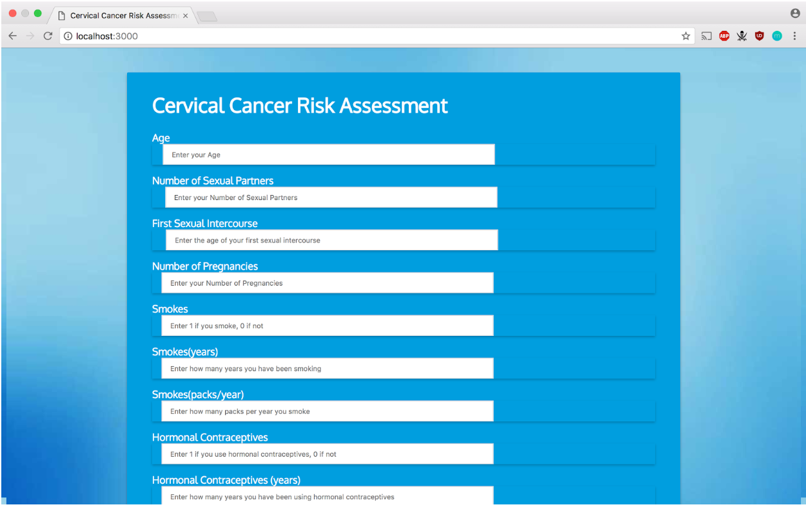

My Projects
I will be updating this page with my projects as I finish them

C2RAN: A Web Application to Assess Cervical Cancer Risk Using an Artificial Neural Network
2017
I built a local application that took the lifestyle habits of a women and assessed her risk of cervical cancer. The application’s user interface was built using a Node.js framework. On the backend, the data was assessed with a neural network built using the Python Scikit-Learn’s MLP Classifier and a risk score was outputted. You can view the code here<